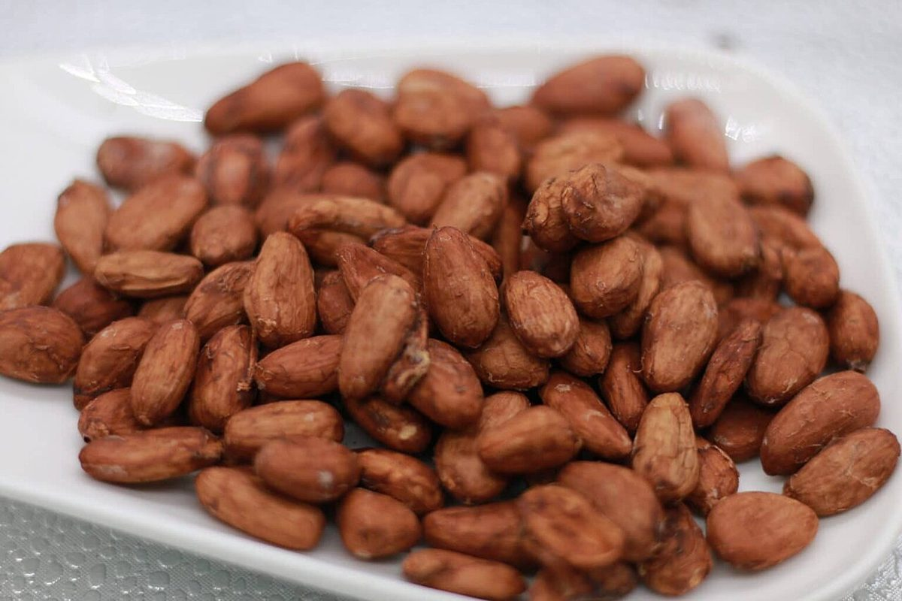
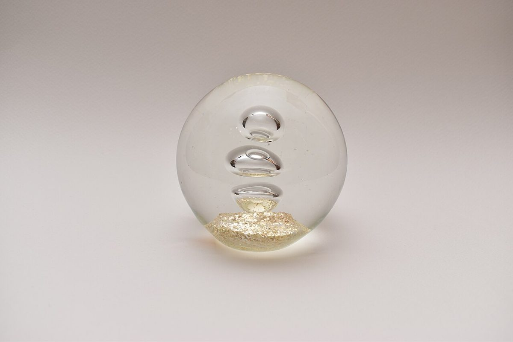

カフェ / 〒515-0055
2KOTI
三重県松阪市田村町にあるカフェ「2KOTI」のご案内ページです。営業時間やメニューなど、詳しいことは準備中。まずはInstagramをのぞいてみてください。
ふた口めまで、ゆっくり。
制作側の連想
「2KOTI」から「ふた口」を連想しました
店名の由来は分かりません。制作側は「2」と「KOTI」の並びを見て、「ふた口(2口)」という言葉を連想し、このサイトを「ひと口め」と「ふた口め」を並べる作りにしました。写真も、素材や質感を二つずつ並べています。これは制作側の連想で、お店の理念・由来とは無関係です。
ふたつ並べ
ひと口めと、ふた口め。
写真はお店や周辺のものではありません。質感を並べて見るための、国外・撮影地不明のフリー素材です。お店で提供しているものを示すものでもありません。
豆の表情


角と丸


並ぶものと、さらさら


ご案内
お店のこと(確認できたものだけ)
| 所在地 | 〒515-0055 三重県松阪市田村町４７０−１ |
|---|---|
| 電話 | 0598-30-8522 |
| 営業時間 | 準備中 |
| 定休日 | 準備中 |
| ご予約 | 準備中 |
| 駐車場 | 準備中 |
| SNS | Instagram @2koti_ |